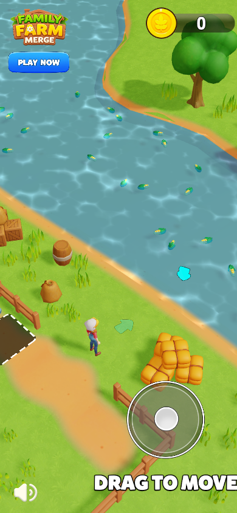
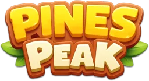

01 / Оригинал
Ферма
Исходный сеттинг: кукуруза, производство и продажа продукции машинам.

Нажмите «Играть»

Исходный сеттинг: кукуруза, производство и продажа продукции машинам.

Первый станок теперь объёмный: пресс, ролики и лампочки. Цепочка: колёса → кузов на колёсах → игрушка.